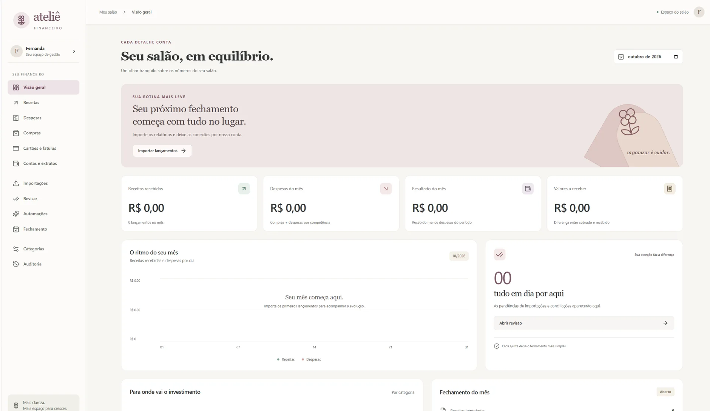

Power Apps
PB Planner
Aplicação para planejar projetos, acompanhar etapas, horas e solicitações da equipe.
Power Apps · Power Fx · SharePointAnalista de Dados · Business Intelligence · Power Apps
Desenvolvo dashboards, aplicativos e automações para organizar informações e melhorar processos. Minha experiência em engenharia e operações me ajuda a criar soluções que fazem sentido na prática.
Aplicações, análises e soluções desenvolvidas em diferentes contextos.
Aplicação para planejar projetos, acompanhar etapas, horas e solicitações da equipe.
Power Apps · Power Fx · SharePoint
Dashboard com indicadores de riscos, conformidade NR-12 e acompanhamento de ações.
Power BI · DAX
Análise comercial com medidas DAX, comparação de períodos e segmentação interativa.
Power BI · DAX · Modelagem de dados
Gestão visual das solicitações de ART, organizadas por etapa de atendimento.
Power Apps · Power Fx
Consulta e acompanhamento de certificados e documentos de dispositivos de segurança.
Power Apps · Gestão documental
Aplicação web para reunir receitas, compras, despesas, cartões e fechamento mensal.
Next.js · React · TypeScript · PostgreSQL
Modelagem relacional e consultas em SQL para análise de ordens de serviço.
SQL · MySQL
API REST de clientes, produtos e pedidos, desenvolvida em Java e Spring Boot.
Java · Spring Boot
Portal web de conteúdos técnicos sobre segurança de máquinas e NR-12.
Desenvolvimento webMinha trajetória profissional começou nas áreas técnica e de engenharia. Ao longo desse período, passei a desenvolver ferramentas, relatórios e automações para facilitar o trabalho das equipes e melhorar a gestão das informações.
Desenvolvo dashboards e relatórios para acompanhar indicadores e apoiar decisões, além de aplicações e automações que organizam informações e facilitam as rotinas das equipes. Minha experiência com processos me ajuda a entender as necessidades do dia a dia e transformá-las em soluções práticas.
Busco oportunidades em Análise de Dados, Business Intelligence, Power Apps e desenvolvimento de soluções.
Enviar e-mail